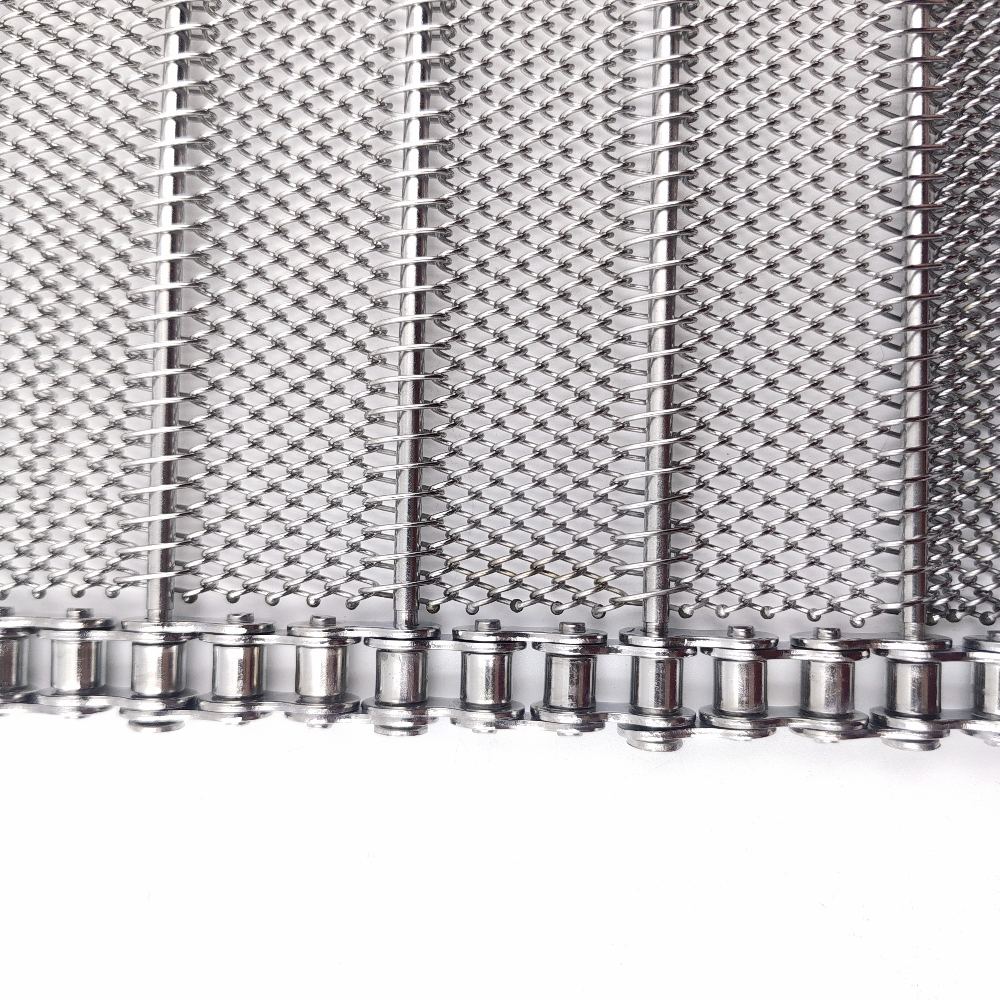
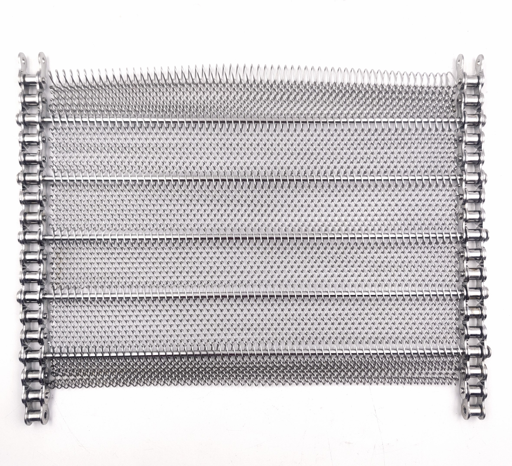

CHAIN DRIVEN CONVEYOR BELT · POSITIVE DRIVE · OEM & REPLACEMENT
Chain Driven Conveyor Belt
Positive Drive. Stable Running.
System-Matched Production.
Wire mesh belt with welded side chains, driven positively by sprockets. Manufactured with diagonal measurement during production, square-riveted large rollers, and matched sprocket supply. Used in washing, drying, cooling, and heavy-load industrial conveyor lines where friction drive is insufficient or unreliable.
Chain Positive Drive
Diagonal Measurement
Square-Riveted Rollers
Sprocket Matched
SUS304 / 316L
ISO 9001
Positive
Chain Drive
Diagonal
Measurement
Square
Riveted Rollers
Sprocket
Matched Supply

Full belt overview · side chain · mesh surface · roller detail

Chain edge close-up

Roller and rod assembly